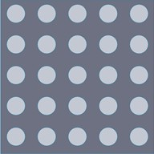
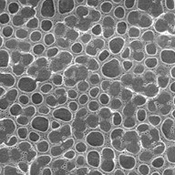
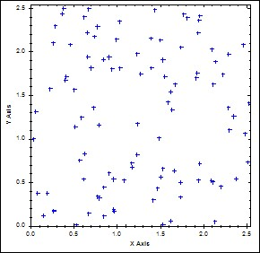
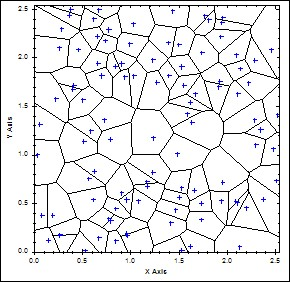
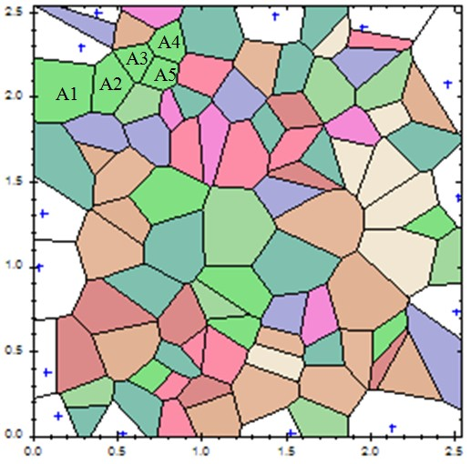

Computer-aided design of porous structures is a challenging task because of high degree of irregularity and intricacy associated with the geometries. Most of the existing design approaches either target at designing artifacts with regular-shaped pores or reconstructing geometric models from existing porous objects.


Regularly-shaped pores
SEM image of an irregular porous structure


Uniformly distributed random Voronoi sites and the generated Vornoi diagram

Random attribute association
To simulate Schaefer and Keefer's "jungle gym" structure, Voronoi tessellation is first generated to discretize the design domain into a series of compartments, as shown in the figure below. The Voronoi generator points can be generated with a uniform distribution (i.e. a constant Probability Density Function (PDF)) defined on the entire geometric domain) or other user defined PDFs.
Irregular Porous Structure Modeling
For regular porous structures, it is difficult to control the pore shapes and distributions locally; for reconstructed models, a design is attainable only if there are some existing objects to reconstruct from.
We proposed an alternative approach to design irregular porous artifacts with controllable pore shapes and distributions, yet without requiring any existing objects as prerequisites.
Inspired by the random colloid-aggregation model which explains the formation mechanism of random porous media, Voronoi tessellation is first generated to partition the space into a collection of compartments. Selective compartments are then merged together to imitate the random colloid aggregations. Through this Voronoi cell merging, irregular convex and concave polygons are obtained and the vertices of which are modeled as control points of closed BSpline curves. The fitted B-Spline curves are then employed to represent the boundaries of the irregular-shaped pores. The proposed approach drastically improved the ease of irregular porous structure modeling while at the same time properly maintained the irregularity that are widely found in natural objects. Compared with other existing CAD approaches, the proposed approach can easily construct irregular porous structures which appear more natural and realistic.
Some randomly selected compartments are then merged together to imitate the "random colloid aggregations". To accomplish this, each Voronoi cell is randomly associated with an attribute, as represented with different colors. Adjacent Voronoi cells with the same attributes are merged together.